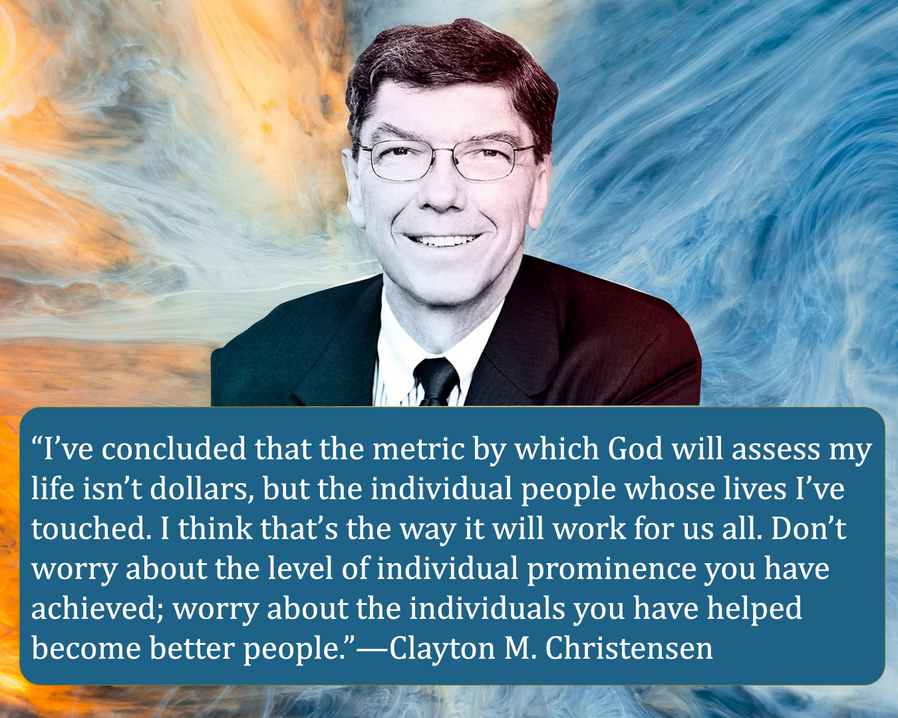
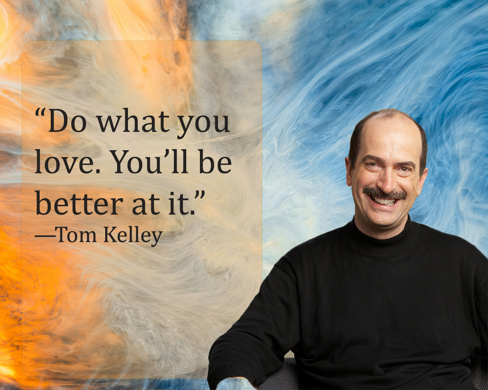
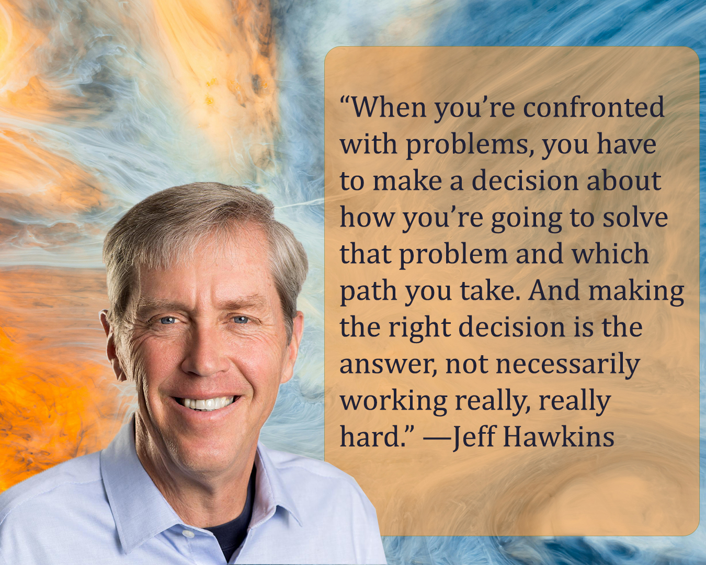
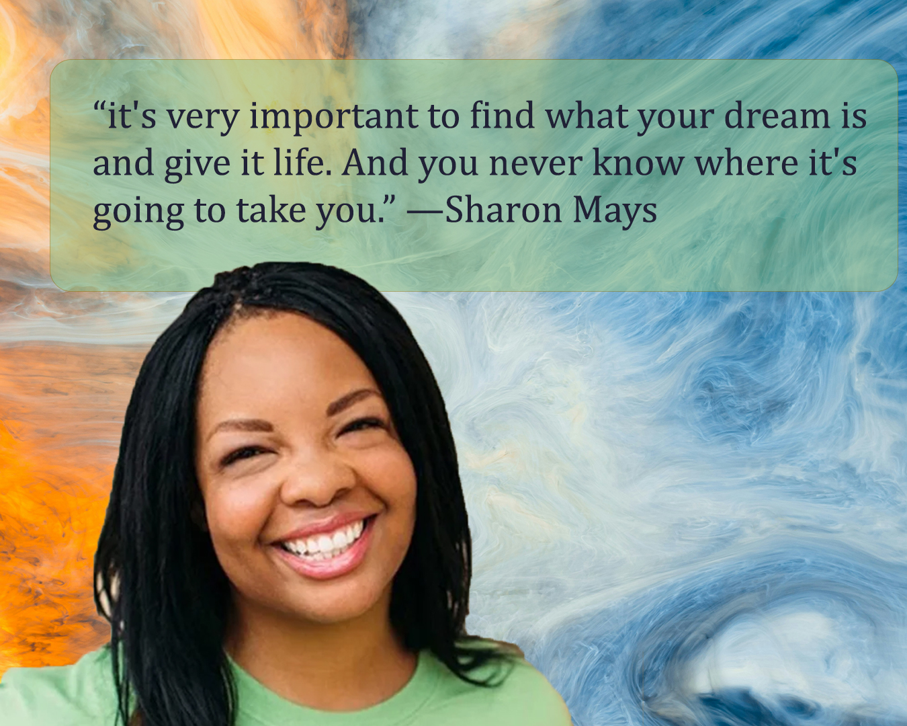
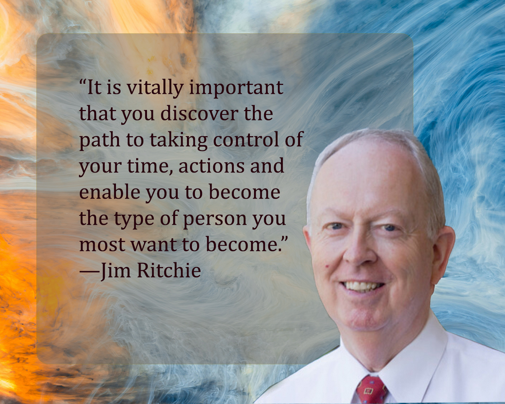

W04 Journal Entry
How Will You Measure Your Life?
I started my week by diving into Clayton Christensen’s How Will You Measure Your Life? and it has really stayed with me. One of my favorite takeaways is his belief that we should teach people how to think for themselves rather than just what to think. He argues that real fulfillment does not come from money or status, but from constantly learning and helping those around us.
The reading also emphasizes the importance of defining your purpose and building a strong family culture as early as possible. I especially loved the story about how he spent an hour every night praying and thinking about his purpose. Even when he felt guilty about taking time away from studying applied econometrics, he stuck with it because he knew that understanding his "why" was the most important thing he could do.
He also shares a vital warning against the dangerous “just this once” mindset. He explains that if he had crossed the line and played ball on Sunday just that one time at age 16, he would have likely done it over and over in the years that followed. It is a great reminder that small compromises can slowly change who we are. Ultimately, he emphasizes that life should be measured by the people we touch and the humility we show, rather than fame or wealth. These lessons are a powerful call to live with integrity and faith every day.
Little Things Are Important

What a beautiful talk by Elder Wirthlin. I love how he teaches that it is not about managing time, but about managing ourselves within the time we have been given. He shows the importance of developing a relationship with ourselves by caring for our bodies through healthy habits and positive thinking. He also emphasizes developing a relationship with others through service and small actions, such as smiling and being patient, which can have a great impact. Finally, he teaches about our relationship with God, explaining that seeking spiritual growth and developing divine qualities helps strengthen our character and draw us closer to Him.
Do What You Love
I love the valuable lessons in this video presented by Tom Kelley. He shares Jim Collins’s three-circle framework: what I am good at, what I am born to do, and what people will pay me to do. It encouraged me to reflect deeply on my own path. Being good at something is not enough by itself. The harder question is discovering my true calling and identifying what brings me joy and a sense of flow. At the same time, that calling needs to connect to real value in the world, something others are willing to pay for. This message reminded me that meaningful work is not only about personal fulfillment, but also about doing my best and performing well. When one of these areas is missing, the balance is lost.
Effective Choices, Not Longer Days
This video had some really important lessons for me. I love that Jeff Hawkins works hard, but he still makes it a priority to be home for breakfast and dinner with his kids. He challenges the belief that entrepreneurship requires superhuman effort and extremely long work hours. He also learned from his colleague Donna Dubinsky that you can be effective without overworking. The main takeaway for me is that success isn’t about working harder, it is about making better decisions consistently.
Action Hero Sharon Mays
Sharon Mays’ video is awesome! I loved hearing her story about how she started her own business. It was so inspiring, and seeing her business actually working made me a little emotional. She shares that starting her own business allowed her to stop trying to fit into a mold that didn’t suit her. She felt free for the first time because she could finally be herself and follow her own path. I also loved how her mother challenged her to either act on her dreams or stop talking about them. That moment pushed her to stop hesitating and begin taking real action. Sharon says the only thing that holds you back is yourself, and success requires daily belief in your dream. I love that she said that no matter what happens to her business, it will always be the best thing that ever happened to her.
Take Control of Your Life - Launching Leaders - Lesson 3
In this video, Jim Ritchie shares his personal success story and explains how a simple formula helped him retire early and build a meaningful life. His formula includes getting up early, working hard, getting an education, finding your purpose, making your mark, and preparing to serve and give back.
He also emphasizes the power of networking through his friendship with Hyrum Smith. Hyrum introduced him to time-management principles and later invited him to join Franklin Quest, showing how relationships can open doors when they are built with integrity.
The main message is that taking control of your time and actions helps you become the person you want to be. The three principles for success are the tri-quation, which connects self-esteem, productivity, and self-control, the productivity pyramid, which is based on values, goals, and daily tasks, and a personal constitution, which is a written description of who you want to become.
Book Report for Launching Leaders
This week I had the opportunity to work on my book report for Launching Leaders. It took hours of dedication to read the book, but I really focused on extracting lessons I want to apply to my life. Reading Launching Leaders came at a time when I was actively seeking to strengthen my relationship with God and invite Him into every part of my life. The book felt like a gentle invitation to hope, reminding me that God speaks through a still, small voice and that He has given each of us unique gifts and a purpose. It helped me slow down, pay attention to spiritual impressions, and recognize that my worth comes from God, not from comparison or social media. The book taught me that taking control of my life is not about controlling every outcome, but about choosing how I respond and aligning my choices with God’s truth, even in uncertainty.
The book also gave me practical tools for growth, including the importance of setting goals, building healthy habits, and surrounding myself with positive mentors. I learned that success is built through daily choices, integrity, and a mindset of service. The principles of the success formula, the productivity pyramid, and a personal constitution reminded me that leadership is not only about achievement but about becoming the best version of ourselves. Most importantly, the book reinforced that giving back and serving others brings true purpose and fulfillment. Launching Leaders is a powerful reminder that with faith, intention, and consistent effort, we can shape our lives in a way that honors God and makes a positive impact.
Life Plan Core Value Statement
While journaling, I took the time to think deeply about my core values. I considered who I want to become and how my choices should reflect what I believe. Writing my core value statements helped me feel more grounded and focused. It was a quiet, meaningful moment where I could truly see what matters most to me.
Life Plan Deconstructing Your Fears
I worked on an assignment about deconstructing my fears, and it was surprising how real and scary they felt. Writing them down made me face them instead of hiding from them. Even though the fears were strong, I realized that I don’t have to be perfect. I just need to keep taking small steps, trust my family, and stay focused on my goals.